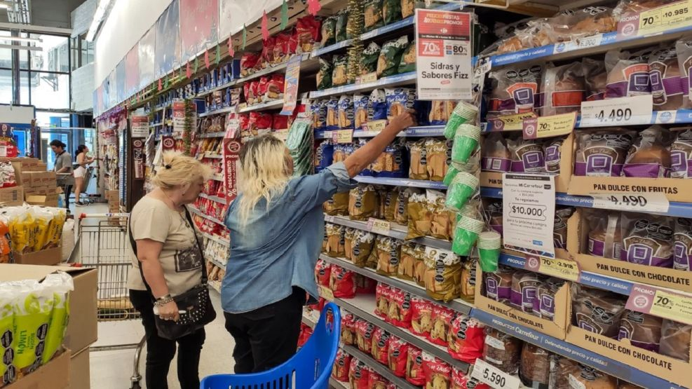

La inflación de diciembre fue del 2,8% y 2025 cerró con el nivel más bajo en ocho años
La inflación de diciembre fue del 2,8%, con una leve aceleración respecto al mes anterior. De esta manera, 2025 cerró con una suba acumulada del 31,5%, el nivel más bajo de los últimos ocho años, marcando una fuerte desaceleración frente a los registros de años previos.

La inflación de diciembre se ubicó en el 2,8%, mostrando una leve aceleración respecto al mes anterior, según los datos oficiales difundidos por el INDEC. Con este resultado, el Índice de Precios al Consumidor acumuló a lo largo de 2025 una suba del 31,5%, el registro anual más bajo de los últimos ocho años.
El dato de diciembre estuvo influido principalmente por aumentos en precios regulados y en el componente núcleo de la inflación, que refleja la evolución de los precios sin tener en cuenta factores estacionales ni tarifas. Entre los rubros con mayores incrementos se destacaron transporte, vivienda y servicios públicos, que tuvieron una incidencia significativa en el resultado mensual.
A pesar de la suba de diciembre, el cierre de 2025 consolida una fuerte desaceleración inflacionaria en comparación con los años previos. El índice anual se redujo de manera considerable frente a 2024, cuando la inflación había superado ampliamente el 100%, marcando un cambio relevante en la dinámica de precios.
El resultado anual es el más bajo desde 2017 y refleja una tendencia de desinflación sostenida durante gran parte del año, aunque con fluctuaciones mensuales que aún mantienen la inflación por encima del 2%. Este escenario plantea desafíos de cara a 2026, en un contexto donde el objetivo será consolidar la estabilidad de precios sin afectar la actividad económica ni el poder adquisitivo.